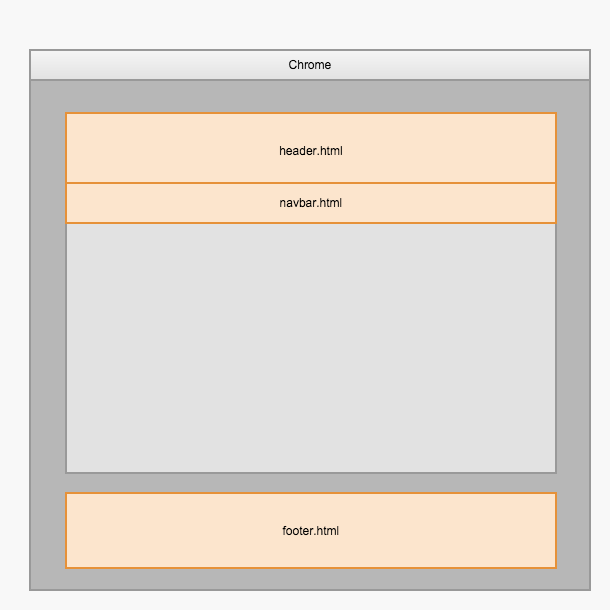

Freezes 提供了很自由的布局方式，从局布的修改到整个页面的修改甚至全面重新定义都是可以的，而且我们并没有“重新发明轮子”，只是采用了最成熟的技术目的是将学习成本降至最低。
首先要介绍一些Freezes在页面布局上的设计理念和一些采用的基础技术。
- HTML - 这是一切的基础
- Jinja 页面引擎语法
Freezes 基于 python 时下非常流行的微框架 Flask 开发的。基于此框架 Freezes 也采用了 Jinja 作为页面模板的输出引擎。如果你是一位 Flask 开发者那么恭喜你！以下的内容你只需要花很少时间就能了解透彻。如果不是那也并不用担心，因为要学的内容并不是很多，学习难度也被 Freezes 极力地减少了。
Freezes 的布局页是存放在 templates/layouts 目录下的，新增的布局文件都可以在文稿中使用 layout 元数据指定（不带文件扩展名）。文稿与布局之间只存在极为微弱的关联关系，这样一来文稿内容与展现方式就被有效地分离。
布局页面的组成
Freezes 的布局页面都继承于 base.html 母板，该母板存在于 Freezes 的安装目录中，你并不需要去修改它，它只是将一个网页划分成为很多个区域，同时也加入了SEO的优化在其中，所以我们强烈建议你使用该母板来制作你的自定义布局。
引用文件
在 tempaltes内有一个名为 includes 的空目录，此处是存放引用文件的。当你需要对站点的某些公共区域进行修改，而且又不希望去修改站点母板或者做自己的母板（这是一个巨大的修改工作）时，可以考虑修改引用文件。
修改的方法就是加入新的引用文件，Freezes 会自动忽略原用的引用文件转而采用你所添加的文件。以下是可以重写 Freezes 引用文件的名称（必须以以下名称命名，其它的文件将被Freezes忽略）
| 文件名 | 作用 |
|---|---|
metas.html |
定义每个页面的在 <head> 标记内的输出内容 |
header.html |
定义每个页面顶部区域的输出内容 |
navbar.html |
定义每个页面的导航菜单 |
footer.html |
定义每个页面的页脚部分的输出内容 |

使用 base.html
继承 base.html 母板的方法如下：加入一个新的布局页面文件到 layouts 目录，然后在页面中加入以下代码:
{% extends "base.html" %}
{% block content %}
<!-- 此处是你定义的块的内容 -->
{% endblock %}
base.html 内定义了很多的块，你都可以在继承的布局页面内采用 {% block 块名称 %} 自定义内容 {% endblock%} 的方法对指定块的内容重写替换。
以下是 base.html 的块定义:
| 名称 | 作用 |
|---|---|
| html_attrs | 定义 <html> 标记内的属性 |
| title | 定义浏览器窗口标题栏文字，也即是 <title> 内的内容 |
| styles | 定义页面的样式引用块 |
| scripts | 定义页面脚本引用块 |
| body_attr | 定义 <body> 标记内的属性 |
| body | 定义整个页面<body>标记内的所有页面内容 |
| header | 页头区域 |
| navbar | 导航栏区域 |
| content | 正文区域 |
| footer | 页脚区域 |
标准布局说明
Freezes 提供以下几种布局方式
recent
显示站点标题并且将posts目录内的文章从新到旧排列文章, 多用于首页
page
posts 目录以外的文章都将自动使用此布局，此布局按以下顺序显示
- 页标题
- 概述 (summary)
- 页位置导航
-
页面正文
page.html -
本页分类目录下的文章列表
post
显示文章详细内容，站点标题将会被缩小，<h1>显示文章标题，此布局按以下顺序显示
- 文章标题
- 封面 (如果有设定)
- 概述 (summary)
- 正文 (html)
- 相关文章 (具有与当前文章相关的
tag) - 讨论 (集成disgus widget )